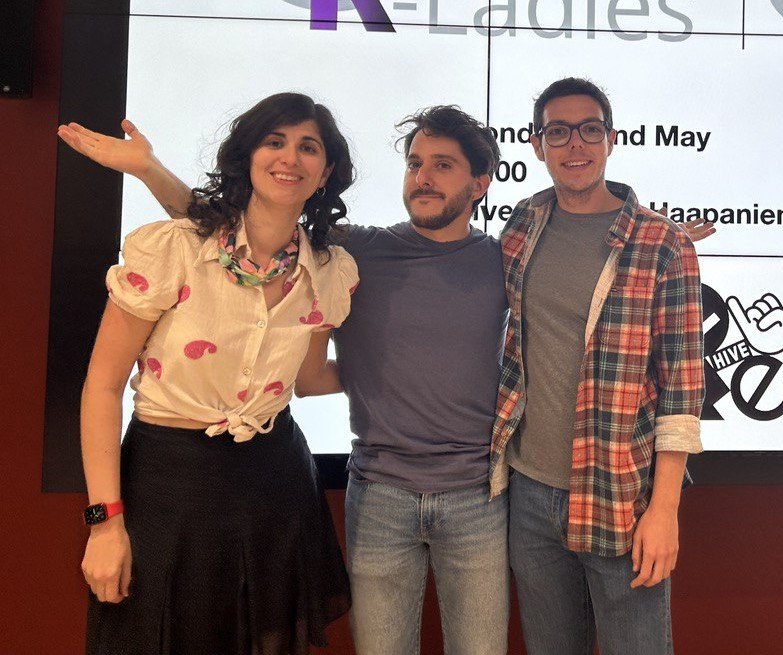
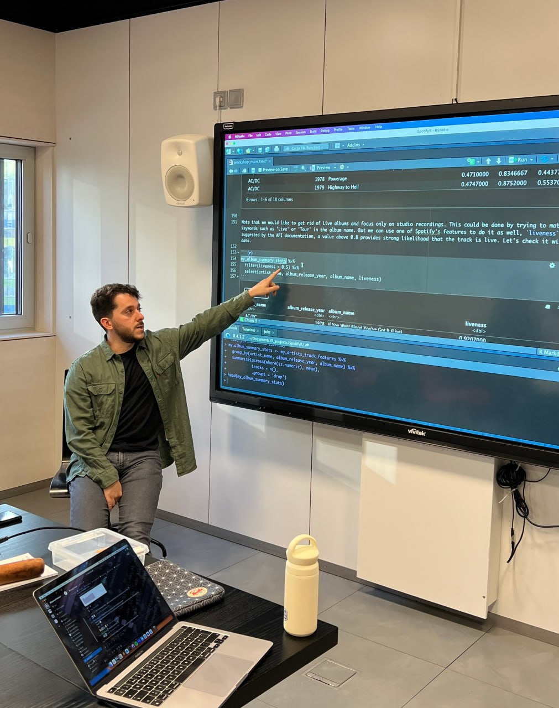
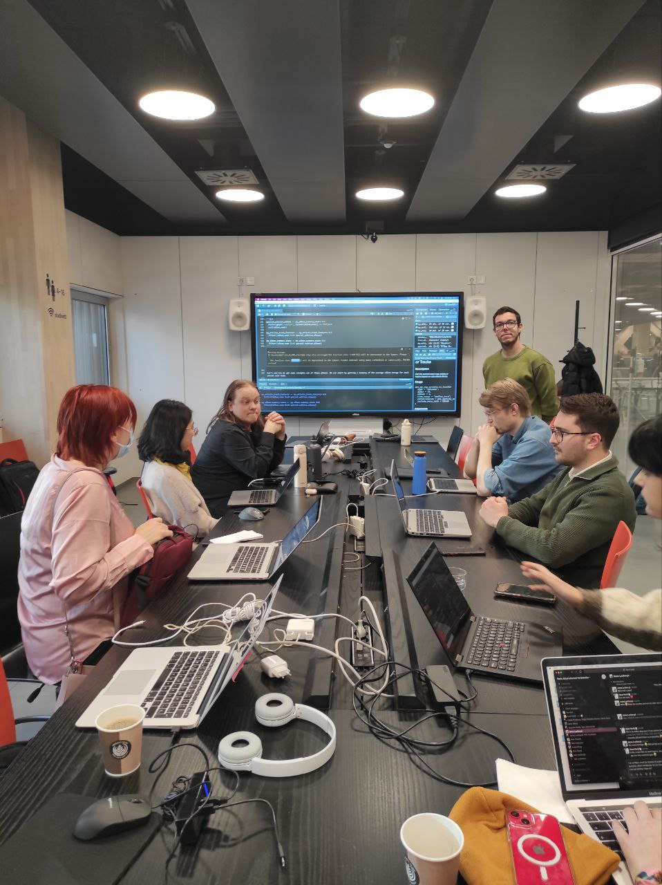

Vicent Boned and Marc Eixarch, organizers of the R User Group Finland, spoke with the R Consortium about how they revived the local R community by focusing on fun, practical applications of R. Drawing on their experience from Barcelona’s tech scene, they took over an inactive R group and began hosting engaging meetups focused on real-world applications of R. From building custom Spotify Wrapped-style reports to analyzing Helsinki’s real estate market, they’ve created a meetup environment where data enthusiasts can explore R through real-world use cases that go beyond the workplace.

L-R: Hazel Kavili (R-Ladies Helsinki Organizer), Marc Eixarch, Vicent Boned
What’s your level of experience with the R language?
Marc: I first encountered R in a university stats course, but I started working with it seriously once I became a data analyst. I’ve been in this role for approximately six or seven years, with a primary focus on data analysis. I work extensively with the tidyverse and ggplot for data visualization, preparation, and gathering data from various sources, such as APIs and databases. That’s my main strength in R.
Occasionally, I take on small projects to explore more technical areas, such as package development, but in those areas, I’m more of a casual user than an expert. So, that’s a good summary of my experience level.

Vicent: I’ve used R throughout my career, mainly for data analysis and visualization. While I’ve explored other packages through side projects, my current work primarily revolves around tidyverse, ggplot, and dplyr for tables and reporting. At my company, we also utilize some Posit tools, such as R Markdown, and occasionally Shiny for prototyping.
I used Shiny years ago in my second job when it was a new package. I didn’t work with it for many years after that, so it’s been exciting to see how much it has evolved. I’ve also attended several RStudio conferences, and it has been great to follow the development of the Tidyverse over time.

How do I Build an R User Group?
R Consortium’s R User Group and Small Conference Support Program (RUGS) provides grants to help R groups organize, share information, and support each other worldwide. We have given grants over the past four years, encompassing over 76,000 members in over 90 user groups in 39 countries. We would like to include you! Cash grants and meetup.com accounts are awarded based on the intended use of the funds and the amount of money available to distribute.